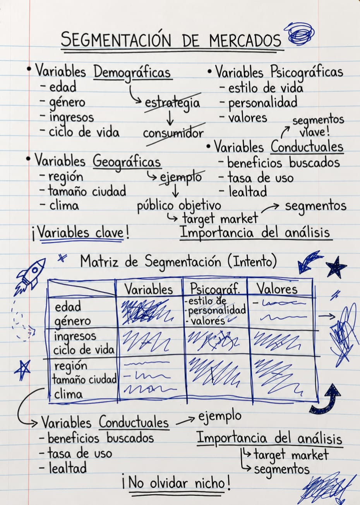
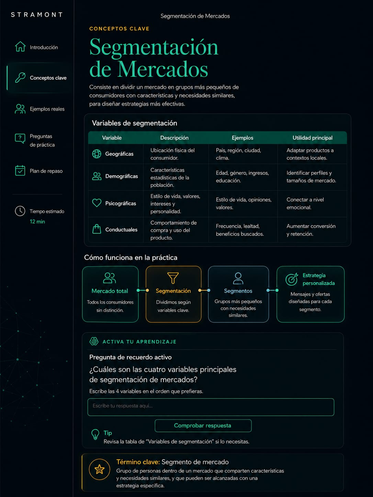
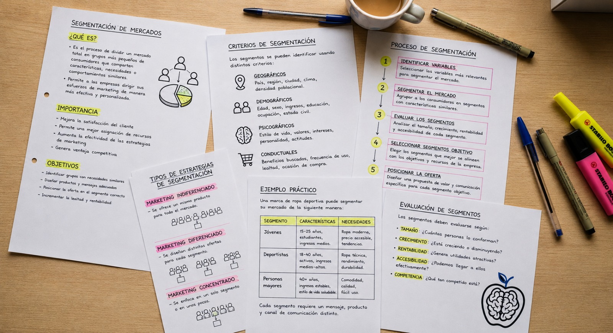
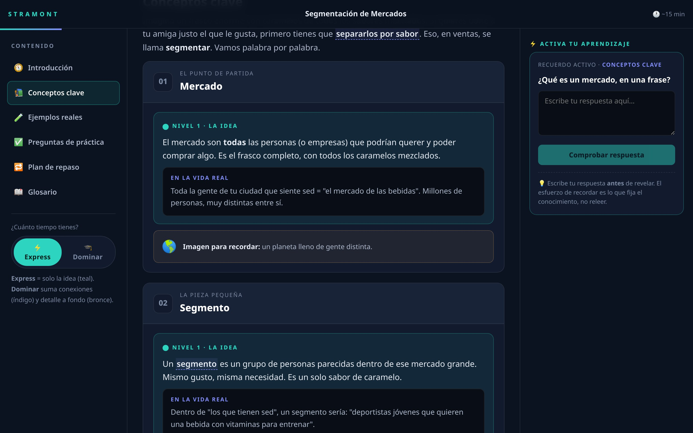

Convertimos tus apuntes desordenados en guías personalizadas con ciencia del aprendizaje, listas para que entiendas y aprendas mejor.


La diferencia no es estudiar más horas. Es estudiar con el material correcto.
Así llegan los apuntes de un estudiante: dispersos, sin estructura y difíciles de estudiar.


No necesitas aprender un método nuevo. Sigue tomando apuntes como siempre.
En clase, en casa, en tu cuaderno o en digital. No cambies tu forma de estudiar.
Fotos, PDF, capturas o documentos. Nosotros nos encargamos del resto.
Nuestros expertos transforman tus apuntes en una guía de estudio personalizada, clara y lista para que entiendas y aprendas mejor.
Recibirás gratis el Kit Stramont de toma de apuntes para que tus próximas clases sean todavía más fáciles de transformar.
Basado en investigación revisada por pares — Dunlosky et al., Weinstein et al.
Aplicamos principios de la ciencia del aprendizaje que han demostrado mejorar la retención y la comprensión a largo plazo.
Entregamos tu guía personalizada en menos de 24 horas, para que puedas estudiar a tiempo, no cuando ya es tarde.
Convertimos tus apuntes desordenados en una guía clara, estructurada y lista para estudiar. Tú enfócate en aprender, no en organizar.
En Stramont aplicamos principios de la ciencia del aprendizaje para transformar tus apuntes en guías que realmente funcionan.
Usamos recuperación activa para que tu cerebro trabaje más y retenga mejor la información.
Programamos repeticiones espaciadas en el momento justo para consolidar tu aprendizaje a largo plazo.
Combinamos diagramas y resúmenes claros para facilitar la comprensión y la memoria.
Explicamos los conceptos desde la raíz, conectando ideas para que realmente entiendas.
Aplicamos lo que estudias a situaciones reales para que lo recuerdes cuando más lo necesites.
Variamos formatos y tipos de práctica para fortalecer tu aprendizaje desde múltiples ángulos.
Sin horas organizando apuntes. Sin empezar desde cero. Sin releer páginas que no entiendes.
Solo abrir tu guía y comenzar.